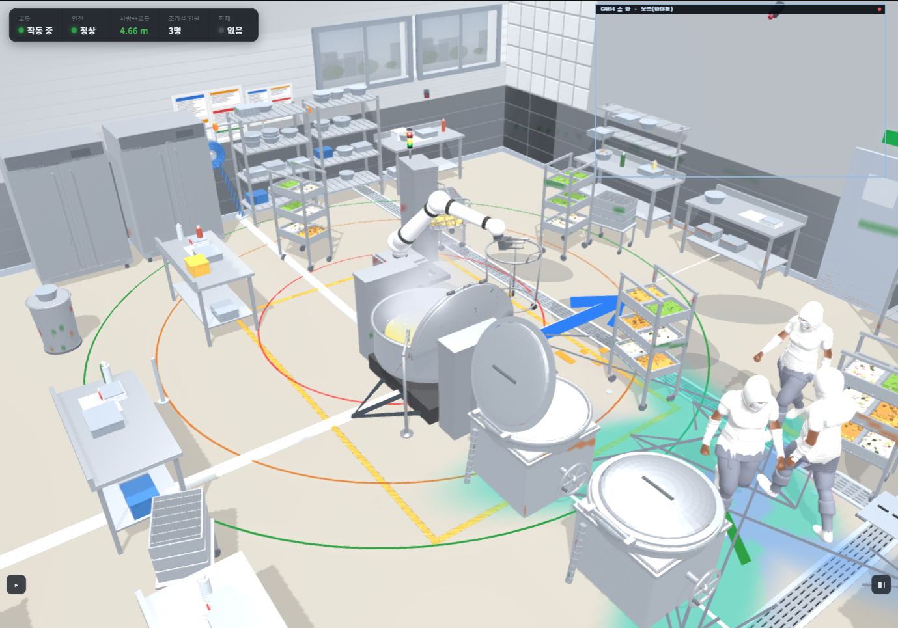
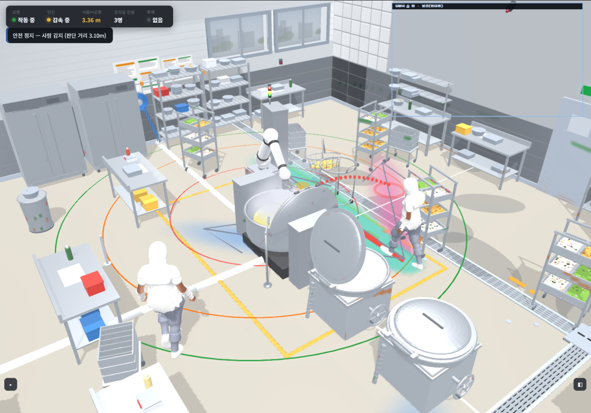
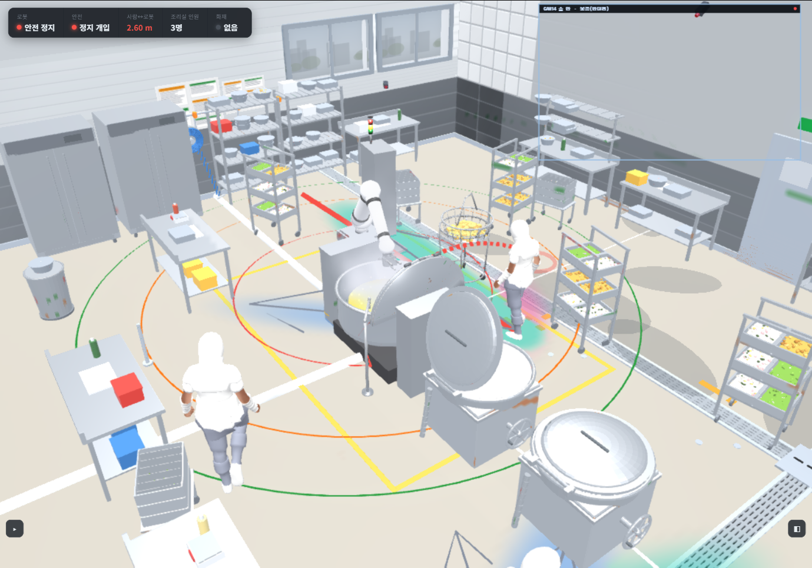

Predict, then get out of the way — one avoidance, step by step
Same camera, one continuous run. Watch the arm move off the worker's path the moment the predicted path reaches the stop ring.
1Normal operation
robot: normal · 4.7 m
A worker approaches (blue arrow) while the robot keeps cooking. Still outside the rings — no action needed yet.
2Prediction fires
robot: slowing · 3.4 m
The predicted path (red dashes) will enter the stop ring within 1.6 s. That is the trigger — the robot begins to slow while the worker is still 3.4 m away.
3Robot yields — to where
robot: retreated · 2.6 m
The arm pulls back over the kettle, off the worker's path (compare its reach in step 2). The worker passes through where the arm just was — no contact.
Where does it avoid to? Look at the arm across the three frames: extended out over the aisle (1–2) →
pulled back over the kettle, on the far side from the worker (3). The robot doesn't just stop in place — it retracts to
the side away from the predicted path, clearing the space the worker is about to occupy, and resumes once the worker leaves.
Trigger = a predicted path entering the stop ring within the 1.6 s horizon (ISO/TS 15066 SSM).